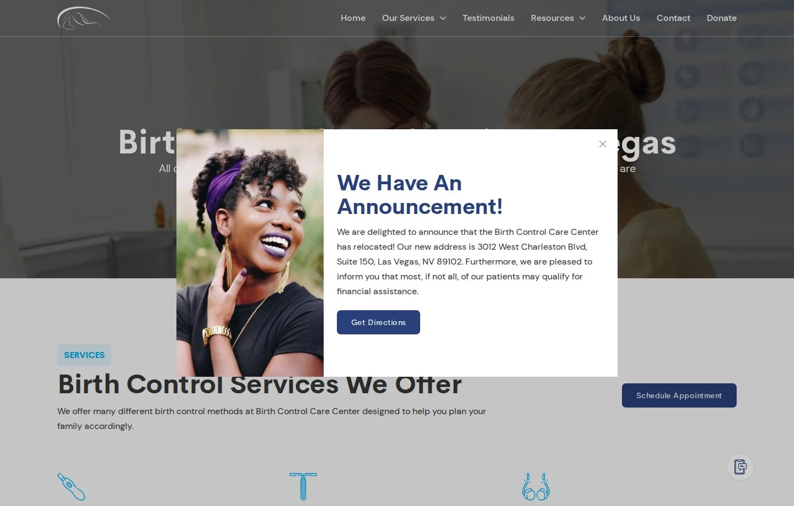

Clinic & Health / Live website study
Care information with a clear next step.
A Las Vegas clinic website that brings practical family-planning information, treatment details and scheduling pathways into one place.
This is a review of a publicly accessible website, using genuine page captures. It does not claim project authorship, client affiliation, or unverified business outcomes.
01 / Real page captures
The experience on two screens.
Both views were captured directly from the accessible live site and show its desktop and mobile presentation at the time of review.


02 / Design observations
The journey behind the visuals.
The public site introduces clinical services while giving visitors clear places to find answers and plan an appointment.
03 / Interior page
Beyond the opening screen.
The birth-control service page offers a closer look at care options and practical patient information.

Continue exploring
See websites from other industries.
Browse more verified live website references and learn from the differences in how visitors are guided.